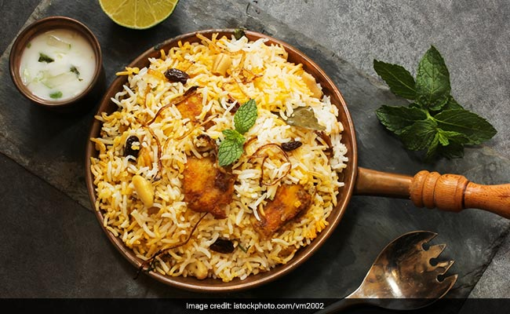

Hyderabad Dum Biryani
Home

Description
Hyderabadi Dum Biryani is a richly flavoured rice dish cooked in layers,
known for it's aromatic spices and tender meat (often chicken or goat)
that is marinated and slow-cooked with long-grain basmati rice on "dum"
(sealed cooking). The unique cooking method which involves layering par-
cooked rice and marinated meat in a sealed pot and cooking it in it's own
juices and steam, allows the flavours to meld, and creates a fragrant,
deeply flavourful dish originating from the kitchens of nizam of
Hyderabad.
Ingredients
Marinade
- 10 black peppercorns
- 6 whole cloves
- 5 cardamom pods
- 2 cinnamon sticks
- 2 whole star anise pods
- 1/2 teaspoon black cumin seeds
- 1 bunch fresh cilantro leaves
- 1 bunch fresh mint leaves
- 1 cup plain yogurt
- 2 teaspoons lemon juice
- 2 teaspoons ginger garlic paste
- 2 teaspoons chilli powder
- 1 teaspoon biryani masala powder
- 1/4 ground turmeric
- 1 pound chicken thighs
Biryani
- 3 1/2 cups water
- 2 1/2 cups basmati rice
- 4 bay leaves, divided
- 1/2 cup warm milk
- 1 pinch saffron threads
- 1/4 cup clarified butter, divided
- 2 onions, thinly slices
- 2 green chile peppers, chopped
Directions
-
Place black peppercorns, cardamom, cloves, cinnamon sticks, star anise
and kaala jeera into a spice grinder ; grind to a fine powder.
-
Place cilantro and mint leaves into a bowl of a food processor; pulse
until coarsely chopped.
-
Combine spice powder, cilantro-mint mixture, yogurt, lemon juice,
ginger- garlic paste, chili powder, biryani masala powder, and turmeric
in a large glass or ceramic bowl. Add chicken; toss to evenly coat.
Cover bowl with plastic wrap and marinate in the refrigerator, about 2
hours.
-
Bring water and rice to a boil in a saucepan; add 2 bay leaves. Reduce
heat to medium-low, cover, and simmer until rice is partially cooked
through and still firm, about 5 minutes. Drain; set aside.
- Combine milk and saffron in a small bowl; stir and set aside
-
Heat ghee in a large pot with a tight-fitting lid over medium-high heat.
Add onions; cook and stir until golden brown, about 15 minutes. Drain on
paper towels; set aside.
-
Reduce heat to low. Add remaining 2 bay leaves and chile peppers; cook
and stir until fragrant, 1 to 2 minutes. Carefully transfer 1 tablespoon
ghee from the pot to a small bowl; set aside.
-
Remove chicken from marinade, wiping excess marinade off; add chicken to
the pot. Discard remaining marinade. Cook over medium heat until no
longer pink, about 2 minutes per side; spread rice on top, then sprinkle
on onions. Drizzle reserved ghee and saffron milk over rice and onion
-
Cover the pot; cook over high heat, about 8 minutes. Reduce heat to low;
continue cooking, about 5 minutes. Remove from heat; let stand, covered,
until rice is tender and an instant-read thermometer inserted into the
thickest part of chicken reads 165 degrees F (74 degrees C), about 15
minutes more.